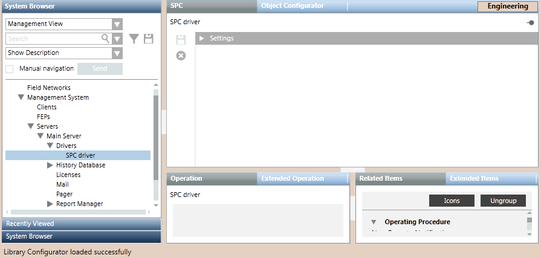
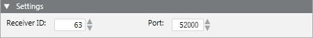
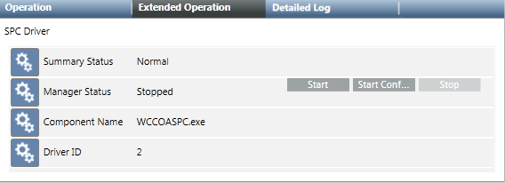

Configure the SPC Driver
This procedure is part of the workflow for integrating an SPC intrusion system.
Prerequisites
- You prepared the SPC configuration files for the panels and noted the values of RCT ID and RCT Port (for FlexC protocol).
Create an SPC Driver
Skip this section if you want to use an existing SPC driver.
- Depending on where the driver will run, select one of the following:
- Project > Management System > Servers > Main Server > Drivers
- Project > Management System > FEPs > [FEP] > [drivers folder]
NOTE: If the [drivers folder] is not available you can create it using using New .
. - Click New , and select New SPC Driver.
- In the New Object dialog box, enter a description.
NOTE: The description must be different from that of any other driver on the Desigo CC server or FEP stations. - Click OK.
- The new driver is added to System Browser but not started.

Configure the SPC Driver Settings
- Depending on where the driver was created, select one of the following:
- Project > Management System > Servers > Main Server > Drivers > [SPC driver]
- Project > Management System > FEPs > [FEP] > [drivers folder] > [SPC driver]
- Select the SPC tab.
- Open the Settings expander and set the following parameters:
- Receiver ID: must match the RCT ID in the SPC configuration file
- Port: must match the RCT Port in the SPC configuration file.
NOTE: For how to obtain these values see Preparing the SPC Configuration File. - Click Save
 .
.

Start the SPC Driver
The status of a newly created driver is Stopped. To be able to import the SPC panel configuration files, the driver must be started with either Start or Start Conf...
- Select the [SPC driver].
- In the Extended Operation tab, select the Manager Status property.
- Click Start.
NOTE: Only for configuration purposes, you can also click Start Conf… to activate the driver without establishing any real connection to the field.
